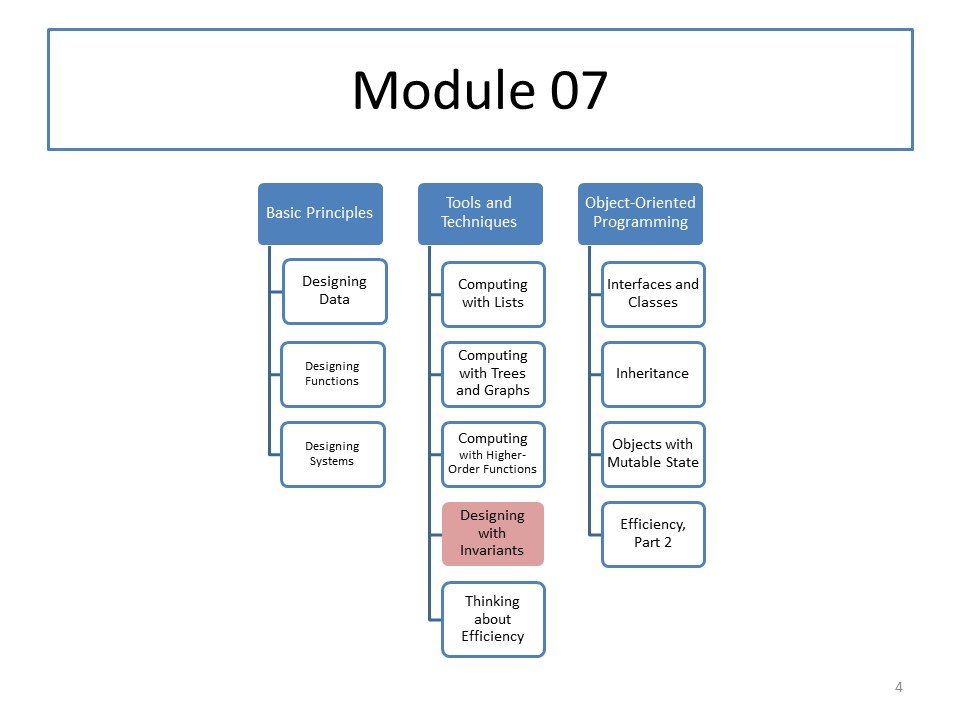

CS 5010: Module 07
Module Overview
Some problems are not easily solved using our usual observer templates. Others are solved only inefficiently by following those templates. We introduce two new kinds of generalization to help solve such problems. We introduce invariants as a way of recording the assumptions that a function makes about its environment.
Course Map
Readings
Read Part VI from our textbook. We are doing things in a different order than the textbook. We are also doing this topic rather differently, so use the textbook as background rather than as a normative reference.
Resources
Lessons
- Lesson 7.1 Introduction to Invariants
- Lesson 7.2 Invariants and Context Variables
- Guided Practice 7.1
- Guided Practice 7.2
- Lesson 7.3 When do I need an invariant?
- Lesson 7.4 Case Study: Undefined Variables
- Guided Practice 7.3
- Lesson 7.5 Foldr and Foldl
Problem Set
Problem Set 07 is due on Monday, 30 October 2017 at 6pm local time.